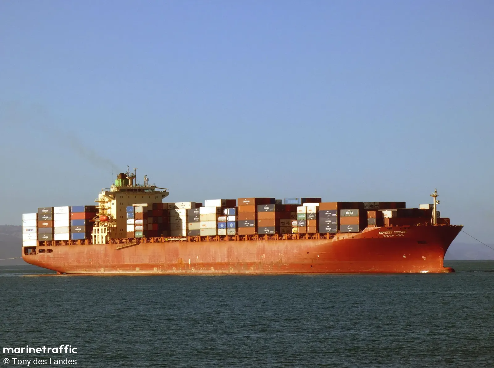

-
현재 거주지 : 서울 용산
-
MBTI : ESFP
-
요즘 하고있는 취미 : 야구 경기보기, 게임, 맛있는 안주에 맛있는 술
마시기
-
좋아하는 음식 : 해산물
-
싫어하는 음식 : 토마토, 오이, 고수
-
개인적으로 만들어보고싶은 사이트 : 선박 관련으로 사이트 만들어
보고싶은데 구체적인 건
아직 못 정했습니다!
-
TMI 2가지! : 비전공자입니다! , 선박기관사로 근무했습니다
-
풀스택 과정에 참여하게 된 이유 : 직무 전환을 위해서